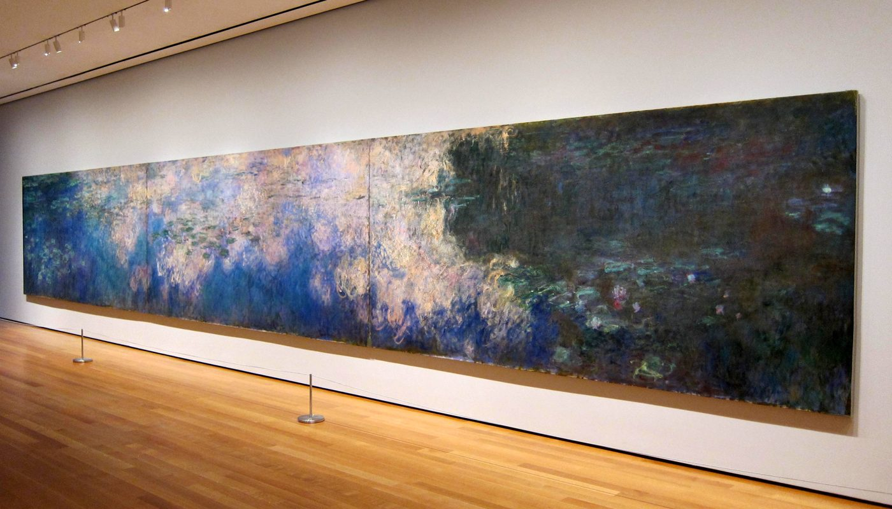
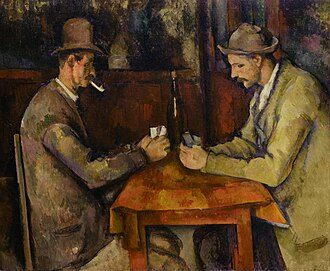
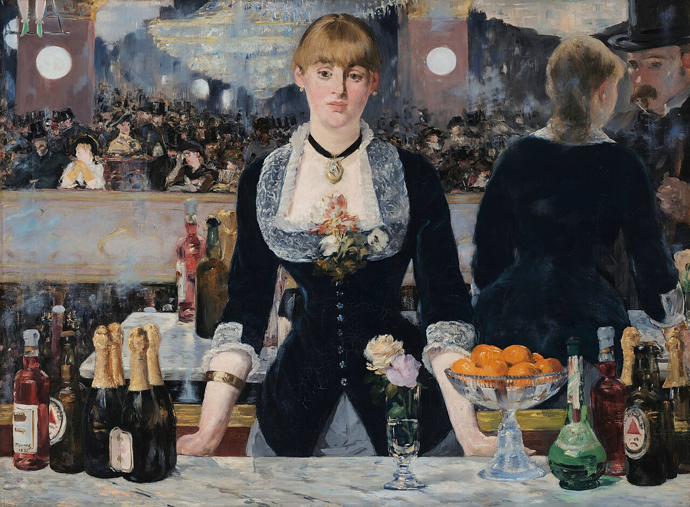
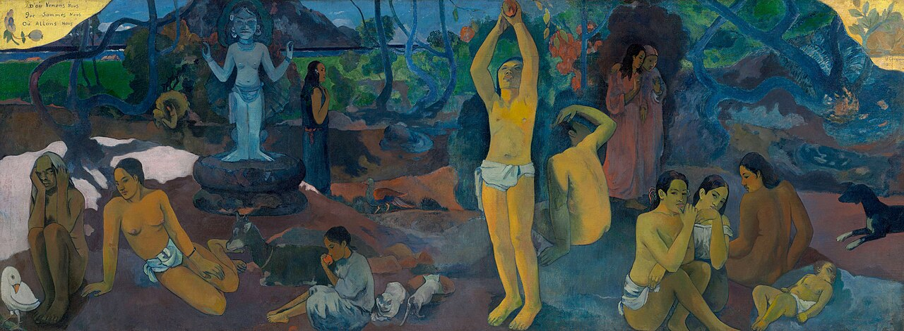

Impression, Sunrise
ImpressionismFranceOil painting
The movement gets its name from this turn toward atmosphere.
More ↗c. 1860 → 1907
Painting opens itself to weather, sensation, modern life, and the instability of seeing



Guide timeline
Move across the whole guide in sequence: see the dates, where you are now, and the next chapter coming up.
Overview
Painting begins to admit its own making: brushwork remains visible, light flickers instead of settling, and structure starts to matter as much as finish. This is less a cliff-edge than a long opening into modernism.
Works
The movement gets its name from this turn toward atmosphere.
More ↗
Shows how intimate domestic subjects belong at the center of Impressionism.
More ↗Painting starts to feel like atmosphere and surface rather than a window.
More ↗
Brushwork and feeling take over from plain description.
More ↗
Structure and simplification point directly toward Picasso and Cubism.
More ↗
Urban modernity and weird visual ambiguity in one image.
More ↗
Symbolism and anti-naturalism push away from plain seeing.
More ↗Next